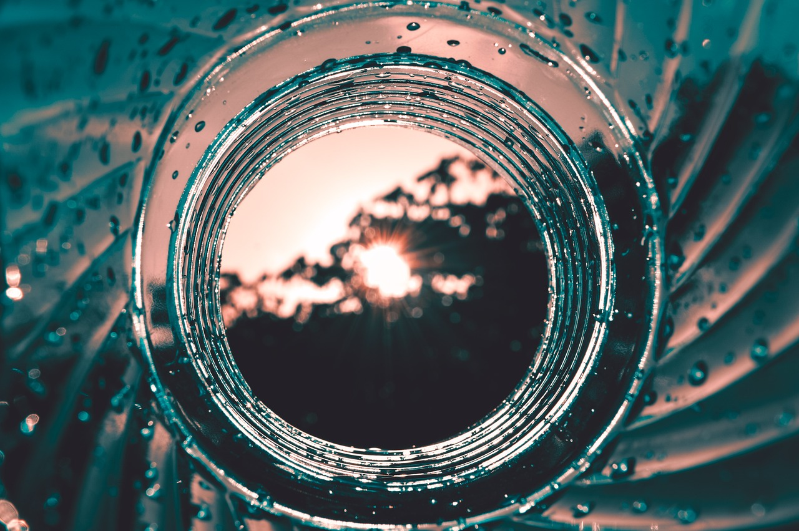
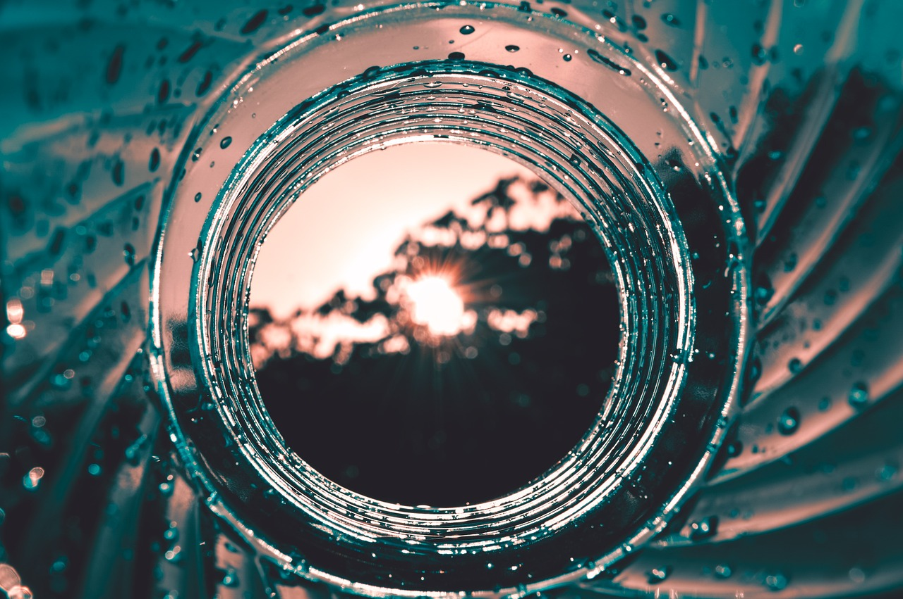

A műanyagokat hét fő kategóriába sorolják
- PET
- PE-HD
- PVC
- PE-LD
- PP
- PS és egyéb anyagok.
Nem mindegyik újrahasznosítható.
Újrahasznosítás folyamata
- Szétválogatás
- Tisztítás
- Előkezelés
- Darálás
- Granulálás
- Gázosítás, hidrogénezés

Nem mindegyik újrahasznosítható.
